来源：https://muhrswhdsi.feishu.cn/docx/B95VdtwByoPXGoxac7Ec1KhQnwc
大家好，我是finley菲尼，一个生财小透明，加入生财也有3年了，目前坐标深圳，有2家知识产权和跨境企业服务公司，过去几年一直从事的全球品牌商标专利的布局。这几年总计合作了几千家的跨境外贸的公司，目前自己手上自己投资持有的全球商标有500个左右。在跨境外贸飞速发展的这几年，逐渐发现并总结出一套不止于国内商标的投资套利方法。之前看到有圈友分享了他不经意注册了中国商标后，别的公司找来购买最终成交并获利的事件。今天我分享的就是如何让这种事情如何变为常态，并且是有规律，有市场，只要深入研究，就可以在成为我们其他主业之外，实现“躺赚”持续获利！
作为一个在国内市场很多人投资的项目—中国商标投资，在国内市场是很成熟的，由于前几年大量的投资人进行提前大量注册商标作为售卖，中国商标局出台了小持有人的规则。防止太多恶意的非法注册囤积情况。但是市场上还是有很多可以供大家选择，“内卷”程度比较严重，如果不注册一个非常有寓意且好的品牌名字，或者抢注他人的品牌（道德层面不建议恶意抢注），是很难得到市场溢价（售卖价值高于注册的价值），那我们“投资”可能会回本很慢，甚至一直囤积手上，最后血本无归。这种背景下，去盲目没有增对性的注册投资中国商标进行后期售卖，是很容易踩坑的。尤其是没有前期调研的情况下。避开红海找蓝海，是很多项目后期的玩法。商标的需求不止在中国，尤其在注重知识产权保护的海外市场，这几年外贸飞速发展，海外乃至全球的商标需求就越来越多，全世界国家众多，并且受大环境发展影响，结合每个国家时期需求不同，被垄断的概率就很小，一直有机会入局。对未来的市场空间继续看好。今天给大家介绍的主要是海外商标结合中国商标的投资方法，由于国家分布、产品范围、平台众多。以下只是我个人经验的分享，不构成任何的投资建议。
商标是由当地政府机构审理并批准的一种知识产权的独有保护，从发起申请，收到受理通知书再到成功审查核准下证，是需要耗费一定的时间，根据每个国家的规则时间不同
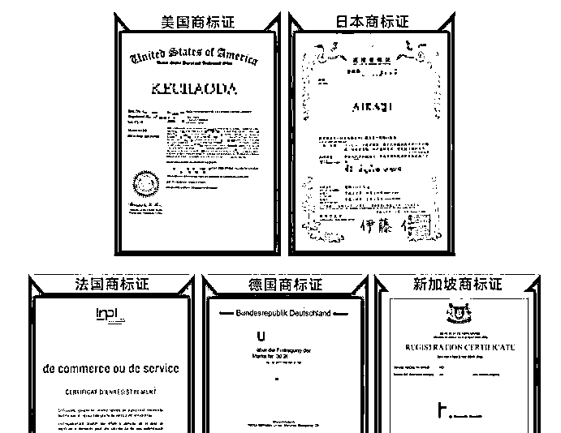
以目前需求最多的美国商标在注册审查一切顺利的情况下需要12个月的时间。其他国家基本都在1年左右，个别快的国家也有6个月左右可以下证的。在申请过程中会遇到审查意见，有的是近似的驳回，很难处理。所以申请商标其实是都有风险的。并不是100%都可以申请下来。作为有经验的投资人，可能成功率在90%以上，也会有不可预测的情况。一旦申请成功可以使用10年，10年有效期。
按国家地区类目进行划分，不同地区不同产品类目的保护都是独立的
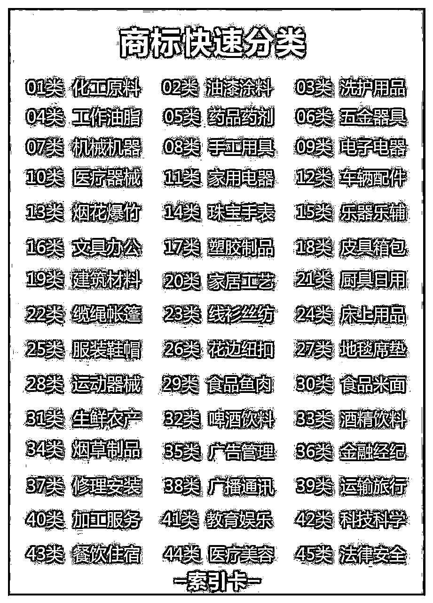
并且申请和后期维护都需要按照当地国家的商标法进行。一旦申请成功，他人就不能申请这个名字和类似会造成混淆的名字。比如我们中国商标就只在中国内受到保护，国外的品牌想在国内售卖他们的品牌商标，需要先申请他们在国内的品牌，才能受到保护。又或者我们售卖的产品是一款鞋子，那他就需要申请鞋子的类目的商标，才能得到保护。商标可以由文字，图形，图案这些元素组合，具有比较高的DIY组合形式。可以是文字，图形，设计的图案组合等等，综合上面几点，商标受区域、申请类目，商标外形等多个因素组成。市场差异化和结构化的空间比较大，被垄断的可能性不大。目前开始选好热门的国家申请，都有机会分的一杯羹。
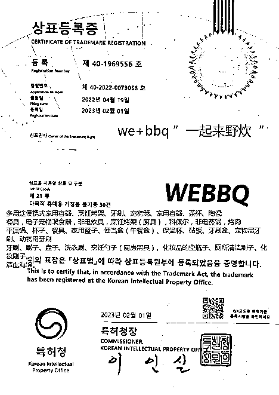
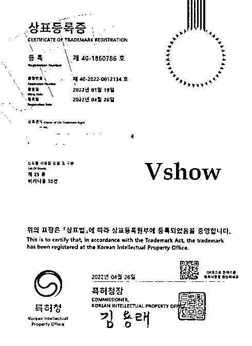
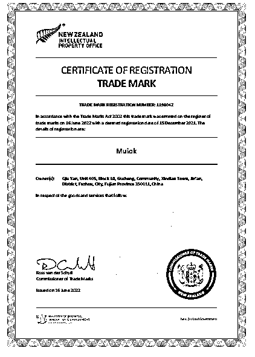
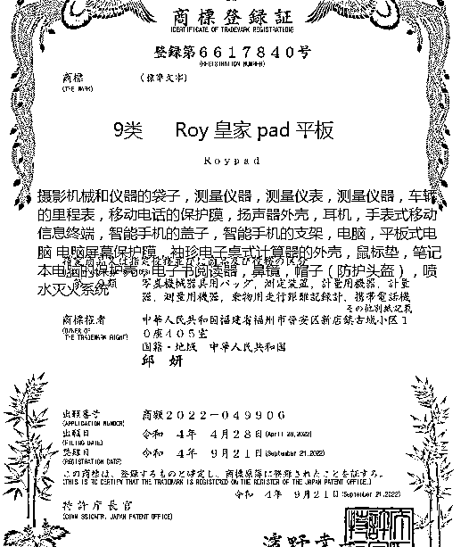
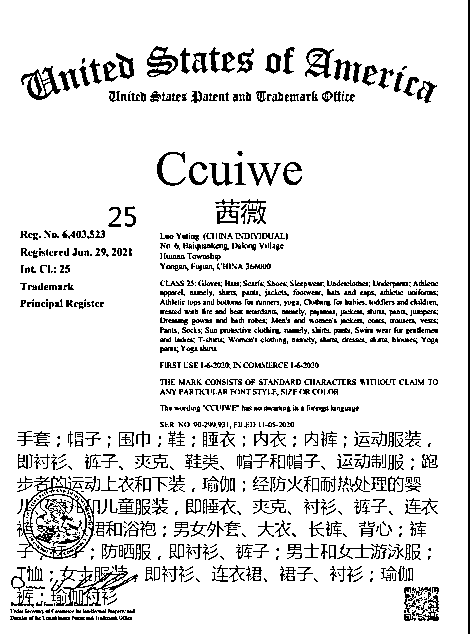
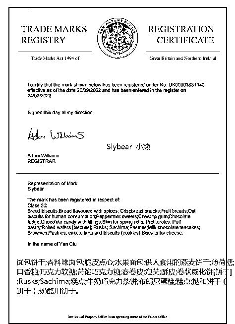
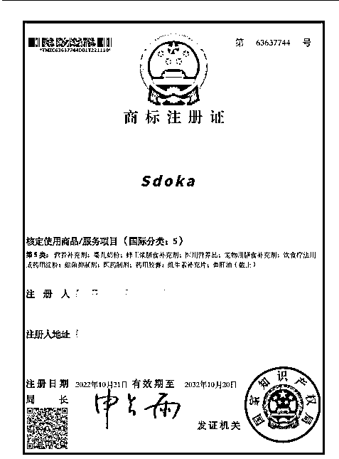
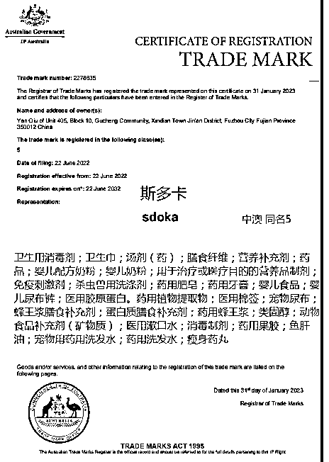
作为一个投资项目，像买房，买股票基金等，我们首先要弄懂这个项目的原理和底层规律。商标是什么？商标是指受当地政府批准对对应产品的内容保护的无形资产。是一种看不见，摸不着，但又真实存在的。
我们现在做的事情就是提前帮未来几个月或者几年需要这些国家商标的企业或者个人提前申请，并承担申请的风险。对于需求者而言，我们为他省下来注册的时间周期（视每个国家6个月到36个不等），直接享受一个受法律保护的商标的权益，同时也不用承担额外申请过程中被驳回的风险。
目前随着企业创业者对侵权事件的意识提升。许多企业的经营其实都有在布局自己个人或者公司的商标，比如网店的名称。公司产品的名称，公司的品牌公众号等等，其实都是一种需求，不少公司靠品牌的贴牌授权或者售卖大牌擦边品牌产品赚的盆满钵满。尤其是体量和知名度越大的公司，被他人抢先注册的情况就很多。
除此以外，还有我们这几年合作最多的群体，跨境电商平台出口外贸，由于国外平台和法律海关等对品牌的要求比国内高。有无自己企业的商标在平台功能上有区别，尤其是目前全球最大的跨境电商平台亚马逊。品牌的使用更是刚需，备案一个成功注册下证的R标，在平台可以行使更大的功能保护，几乎每个店铺都需要。而注册的不稳定性和长周期的等待（美国需要12个月起步），也让现成注册好的R标成了很多成熟卖家的考虑对象。除此以外，还有其他的电商平台，比如拼多多，天猫，coupang也都需要。还有一些常见的品牌营销的包装套路，比如注册一个当地海外公司主体，配合当地的商标和中国商标在中国进行销售。就可以形成内销打出xx国家原装进口，形成价格的溢价。
注册时机很重要，越早的布局优势越大。注册这些品牌当注册的时候申请量不多，一些好的名字申请的难度就比较低，有机会申请下来，随着市场的申请量上升，越来越多的类似商标，就会导致很多好的名字品牌就无法申请下来，但市场对好名字的需求一直在，大家都想用一个符合自己公司运营推广的名字。后期注册不下来，只能花钱从别人那购买，这就是一些好名字的价值，具有唯一且独占性。
作为能持续获利的事情，我们需要在投入前期计算好投入产出比，注册这些商标的主要费用组成是商标的注册官费和代理公司的服务费和律师费（国外商标需要由律师递交，律师收取对应服务费），像中国商标最简单的成本就是270的官费，剩下如果自己能掌握检索和评估风险的（可以借助阿里云，腾讯云提交申请），其他的费用就可以节省下来。如果想省事，找一家代理公司，一般收200-300元服务费，就可以帮忙检索给出建议。以次类推，海外国家也是类似情况，目前市场常见的主流美国商标注册成本在3000左右，英国商标2500，日本商标4000，欧盟商标7200，加拿大3800，德国4500，法国4500。韩国3500.。加上每个国家的转让手续费500-3000元不等。等于最后的我们的投入成本。
注册好后，就可以找好渠道开始售卖了，一般方法可以通过一些代理公司进行代售，或者挂到国内几家比较大型的商标售卖平台，比如鱼爪网，麦汇网等等。
以目前商标交易市场的成交来评估，一般的名称，一般的类目，美国的价格5-6000。英国5-6000，日本10000-12000，欧盟12000-13000，加拿大特殊30000起步（之前5-6w），德国12000，法国15000-20000，韩国15000-20000。按这些比较正常的价格出售，或者找到分销的公司渠道，设定底价帮忙出售，加快销售的速度。基本每一个成功注册下来到售出的周期是半年到1年，利润最低在2000，最多的25000。投入产出比基本都是100%-300%。个别名字国家的投入产出比更能达到1000%。18年5000注册的一个加拿大，21年时候卖了65000元，这是个别的结构市场，由于后来市场大家的投资集中，价格下探到2-3w元不等，但从获益来说还是相当不错。
以下是近期的一些交易记录。
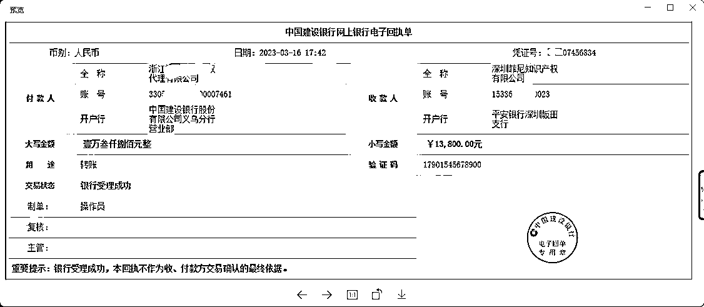
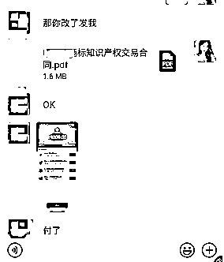
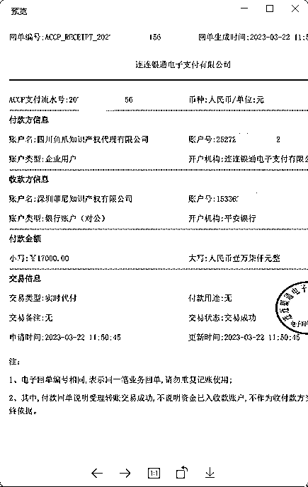
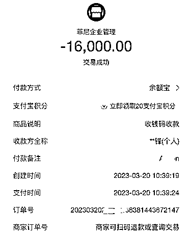
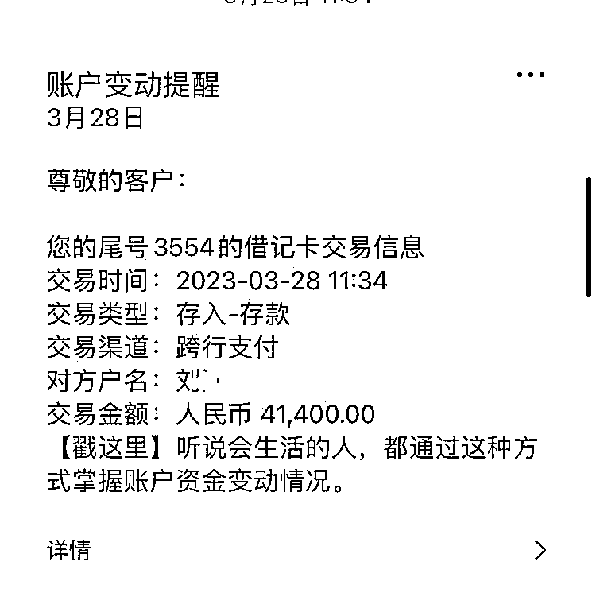
目前东南亚沙特中东等是跨境出口新兴的市场，需求开始出现，但市场注册好的比较少，价格都比较高。投入产出比都比较可观。
选定国家其实就是选定投资市场，这个大家可以把他看成类似股票市场的买入，你看好这个国家的未来，看好某些新兴市场平台的发展。就可以适当的下注。一般来说发达国家和世界著名特产的国家是一直需要的，传统贸易强国，美日欧英德国法国加拿大等等，传统贸易的几个国家特产，比如法国的红酒，德国的家居建材，澳大利亚的奶制品食品，日韩的彩妆等等都是外贸进出口需求比较大的国家类目。电商平台前几年美国市场火爆，离不开亚马逊平台的持续升温，美国商标最火的时候20000一个。而注册成本是2000多，利润空间还是很可观的。后续的其他的国家其实也是被亚马逊平台带动，比如欧盟，日本，英国，加拿大，我们的购买客户基本都离不开购买后用于亚马逊的平台使用或者与这几个发达国家的外贸往来，当我们要布局新的市场和商标时候，可以参照最新的国家发展战略，比如2022年中国与周边国家签订的RCEP协议，确定了未来和东南亚周边的贸易往来，所以从去年起涌现不少新的需求开始求购泰国，新加坡，马来西亚，印尼。越南这几个国家的商标，由于注册的人少，提前布局的人少，市场的价格还是比较高，一般投入产出比1年，投入产出比可以到500%。
中国这几年的出口是占据了世界的50%以上，其中很多产业优势是值得我们关注的。国内出口海外越多，售卖越多的产品就是我们布局的重点，像深圳是电子产品3C,就非常多的这个类目商标需求，基本是供不应求。同时服装是我们出口的重要的类目，占比非常高，是市场的一直主力军。同时我们需要注意选择方便出口，货物价值高，覆盖面广的产品，我们目前一般投资几个新的国家，会优先选择以下类目，电子产品,鞋子服装，玩具健身，厨房家具，汽车配件，灯具，箱包。以上是市场需求比较稳定，且基本不会压在手里太久的商标类目。当然，有时候一些小众蓝海类目，比如电子烟，食品等，虽然需求不大，但同时注册的人少，价格普遍比较高，利润空间比较大。但需要考虑资金占用的时间，可能注册下来后需要占用资金一段时间，才能卖出变现。
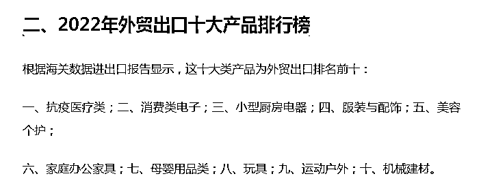
在同等价格下，市场选择不是我们唯一时候，就会进入的竞争。常见的国家比如美国、日本、欧盟、中国这些，时常就会有很多可以选择，我们在注册投资前，要怎么才能让我们的投资更快的回本获利？最理想的状况就是每一次有市场需求，买家都能最后选中我们的商标，并且最后成交。其实最在意的就是名字，大家可以联想一些好记好读好看的商标不能太长，并且和行业类型有关的，比如我们之前注册的一个医药品牌，ankon。An是安全的意思，kan是健康的组成，一起的寓意就是安全健康，很符合医药保健品的定位，这种名字就是一般大家比较喜欢的，自然就可以卖出一个好的价格。除此以外，选择对小类产品也是很关键，一些常见的商品服务包含在内，基本就可以满足大家的需求。所以，相对可读（有含义的名字）+热门国家|类目+合理的定价，就可以让注册下来的商标快速流通起来，从而产生更多的利润。
好的名字是关键，尤其在市场内卷情况下，之前能借助工具较少，完全靠自己抓脑袋想，现在随着ai工具网站的开发，大大缓解了取名字的烦恼。以下推荐几个取名字网站，事半功倍。这些名字生成后再单独在当地商标局系统进行检索判断，注册风险不高我们就可以安排申请了。
只需要把自己对品牌的关键字输入，选择构成类型，相关联性等就会自动生成很多名字，这个不仅适用于商标的生成，其他的公司名称、网站等等都可以使用，非常方便适合寻找灵感。
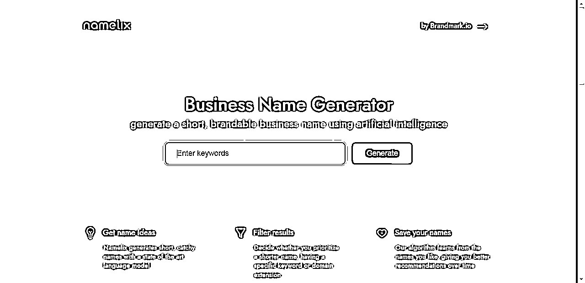
作为国内几个头部的企业服务平台，阿里云的检索和起名服务是比较方便的，适用于国内的起名和检索。
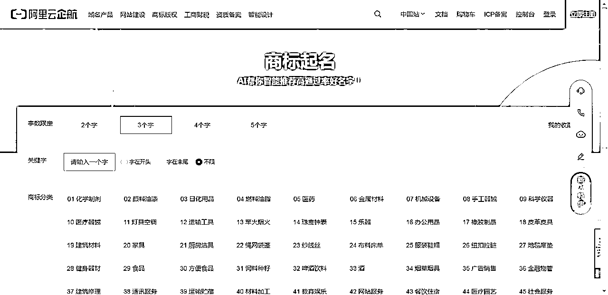
chatgpt可以代替我们做很多事情，想名字当然也不在话下。如何调教好这个工具帮我们想很多好的名字是非常省时间的，同时还可以生成品牌故事，由于目前使用不多，有待大家一起挖掘更多的功能！
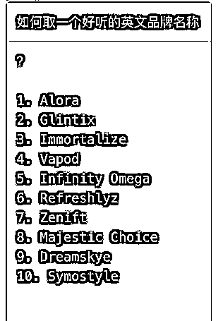
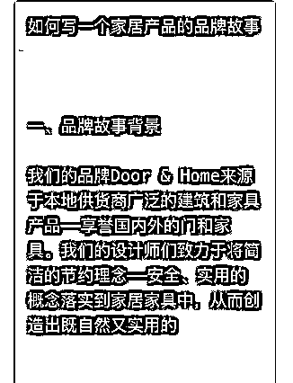
以上基本把我对整个海外商标投资的市场做了个介绍。抛砖引玉，欢迎大家能多交流，有相关优势和行业经验的朋友可以尝试，不管怎么样，投资有风险，入场需谨慎。但是如果在投资前需要做好市场的需求调研，一个详细细致的市场前期了解，更能让我们在这个小领域中赚到一些零花钱。好的品牌会说话，更是一种无形资产！当我们在每个注册的品牌中注入我们的心血和想法后，自然会有意中人出现。